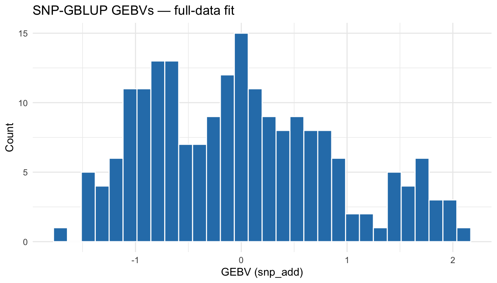
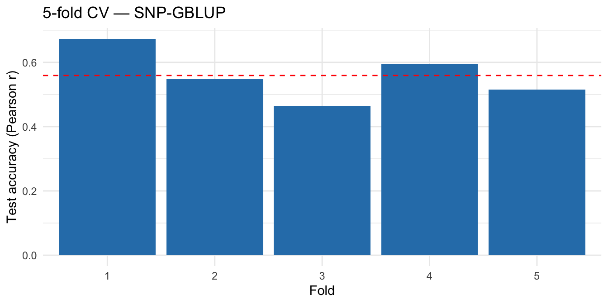

Genomic prediction with masreml
📐 Theory: Mixed Model & BLUP Family · REML Algorithms · GBLUP · Continuous and Binary Trait
This tutorial fits genomic prediction models with masreml end-to-end: GBLUP on SNP, Microhaplotype-GBLUP on phased microhaplotypes, cross-validation, and the threshold model for binary traits. All code chunks evaluate against the bundled demo dataset, so the tables and plots below are the actual output you get from running the code.
Setup
SNP workflow
Full-data fit — GBLUP
masreml() fits the standard mixed model \(\mathbf{y} = \mathbf{X}\mathbf{b} + \mathbf{Z}\mathbf{u} + \mathbf{e}\), estimates variance components by REML (default method = "auto" — HE-initialised AI-REML for \(n < 50{,}000\)), and returns a masreml object.
══ masreml Summary ═══════════════════════════════════
Model:
Call : masreml(y = y, X = X_fixed, markers = list(snp_add = d$snp),
Call : trait = "continuous", verbose = FALSE)
Individuals : 200
Components : snp_add, residual
Log-likelihood : -138.3632
Algorithm : AI
Solver : cholesky
Converged : TRUE (iterations = 14)
Variance Components:
Component Sigma2 H2 Proportion
snp_add 0.891200 0.4756 0.4756
residual 0.982469 NA 0.5244
Training Performance:
accuracy (r) : 0.8175
R^2 : 0.6682
RMSE : 0.8691
bias (slope) : 1.232
GEBV Summary:
Component Min Mean Max SD
snp_add -1.7623 0 2.0501 0.8828
total -1.7623 0 2.0501 0.8828
══════════════════════════════════════════════════════Inspect the GEBV distribution:
ggplot(data.frame(gebv = fit_gblup$gebv$snp_add),
aes(x = gebv)) +
geom_histogram(bins = 30, fill = "#2c7fb8", colour = "white") +
labs(x = "GEBV (snp_add)", y = "Count",
title = "SNP-GBLUP GEBVs — full-data fit") +
theme_minimal()
Predict on held-out candidates
The bundled demo provides a train_idx / test_idx split:
train_ids <- d$pheno$id[d$train_idx]
test_ids <- d$pheno$id[d$test_idx]
fit_train <- masreml(
y = y[train_ids],
X = X_fixed[d$train_idx, , drop = FALSE],
markers = list(snp_add = d$snp[train_ids, , drop = FALSE]),
trait = "continuous",
verbose = FALSE
)
pred <- predict(
fit_train,
markers_new = list(snp_add = d$snp[test_ids, , drop = FALSE]),
markers_train = list(snp_add = d$snp[train_ids, , drop = FALSE]),
train_ids = train_ids,
test_ids = test_ids,
X_new = X_fixed[d$test_idx, , drop = FALSE],
y_new = y[test_ids]
)
kable(as.data.frame(pred$metrics),
digits = 4,
caption = "Held-out accuracy on the test split")| R2 | RMSE | accuracy | bias | AUC | r_MG |
|---|---|---|---|---|---|
| 0.2776 | 1.3651 | 0.5269 | 1.2124 | NA | 0.781 |
Cross-validation — cv_masreml()
cv_masreml() automates K-fold or family-based splits and refits the model on each training fold. Default is 5-fold random; pass scheme = "family" and a family-id vector for genuine candidate-selection accuracy.
cv <- cv_masreml(
y = y,
X = X_fixed,
markers = list(snp_add = d$snp),
folds = 5L,
scheme = "random",
seed = 123L
)
fold_tbl <- data.frame(
fold = seq_along(cv$accuracy_fold),
accuracy = cv$accuracy_fold,
bias = cv$bias_fold
)
kable(fold_tbl, digits = 4, caption = "Per-fold test accuracy")| fold | accuracy | bias | |
|---|---|---|---|
| fold1 | 1 | 0.6733 | 1.2527 |
| fold2 | 2 | 0.5470 | 1.1142 |
| fold3 | 3 | 0.4644 | 1.0099 |
| fold4 | 4 | 0.5960 | 0.7433 |
| fold5 | 5 | 0.5149 | 0.8375 |
kable(data.frame(metric = c("Mean accuracy", "Mean bias"),
value = c(cv$accuracy, cv$bias)),
digits = 4,
caption = "Overall 5-fold CV summary")| metric | value |
|---|---|
| Mean accuracy | 0.5591 |
| Mean bias | 0.9915 |
ggplot(fold_tbl, aes(x = factor(fold), y = accuracy)) +
geom_col(fill = "#2c7fb8") +
geom_hline(yintercept = mean(fold_tbl$accuracy),
linetype = "dashed", colour = "red") +
labs(x = "Fold", y = "Test accuracy (Pearson r)",
title = "5-fold CV — SNP-GBLUP") +
theme_minimal()
Binary trait
For 0/1 outcomes, set trait = "binary" and pick a link function. masreml runs a single-step Laplace approximation with the working response, returning the posterior mode of the liability-scale GEBV plus the fitted probability \(\hat{p}_i\).
══ masreml Summary ═══════════════════════════════════
Model:
Call : masreml(y = y_bin, X = X_fixed, markers = list(snp_add = d$snp),
Call : trait = "binary", link = "logit", verbose = FALSE)
Individuals : 200
Components : snp_add, residual
Log-likelihood : -3348.4568
Algorithm : Laplace-1step (HE)
Solver : cholesky
Converged : TRUE (iterations = 1)
Variance Components:
Component Sigma2 H2 Proportion
snp_add 0.730232 0.1816 0.1816
residual 3.289868 NA 0.8184
Training Performance (observed/probability scale):
AUC : 0.8961
R^2 : 0.4694
RMSE : 0.391
bias (slope) : 1.71
accuracy (r) : 0.6851
GEBV Summary:
Component Min Mean Max SD
snp_add -1.5789 0 1.8532 0.8268
total -1.5789 0 1.8532 0.8268
Binary Trait (GLMM Laplace):
Link : logit
Prevalence : 0.5000
AUC : 0.8961
h2 (liability) : 0.1816
h2 (observed) : 0.0887
Fitted Probabilities:
Min=0.1225 Mean=0.4984 Max=0.9041 SD=0.2008
══════════════════════════════════════════════════════fit_bin$h2 is reported on the liability scale (denominator \(\sigma_u^2 + \pi^2/3\) for logit). Predictions return both the liability-scale GEBV and the observed-scale probability:
pred_bin <- predict(fit_bin, y_new = y_bin)
kable(as.data.frame(pred_bin$metrics),
digits = 4,
caption = "Training-set metrics, binary trait (AUC = discrimination)")| R2 | RMSE | accuracy | bias | AUC | scale |
|---|---|---|---|---|---|
| 0.4694 | 0.391 | 0.6851 | 1.7099 | 0.8961 | observed (probability scale) |
Microhaplotype workflow
Switching from SNP to phased microhaplotype markers only changes the markers slot. Everything else — fitting, summary, prediction, cross-validation, binary trait — is identical.
══ masreml Summary ═══════════════════════════════════
Model:
Call : masreml(y = y_mh, X = X_fixed, markers = list(mh_add = d$mh),
Call : trait = "continuous", verbose = FALSE)
Individuals : 200
Components : mh_add, residual
Log-likelihood : -165.9361
Algorithm : AI
Solver : cholesky
Converged : TRUE (iterations = 9)
Variance Components:
Component Sigma2 H2 Proportion
mh_add 1.209920 0.4999 0.4999
residual 1.210364 NA 0.5001
Training Performance:
accuracy (r) : 0.8323
R^2 : 0.6927
RMSE : 0.9349
bias (slope) : 1.335
GEBV Summary:
Component Min Mean Max SD
mh_add -1.8524 0 2.4862 0.9208
total -1.8524 0 2.4862 0.9208
══════════════════════════════════════════════════════Cross-validation on microhaplotype architecture:
cv_mh <- cv_masreml(
y = y_mh,
X = X_fixed,
markers = list(mh_add = d$mh),
folds = 5L,
scheme = "random",
seed = 123L
)
fold_mh_tbl <- data.frame(
fold = seq_along(cv_mh$accuracy_fold),
accuracy = cv_mh$accuracy_fold,
bias = cv_mh$bias_fold
)
kable(fold_mh_tbl, digits = 4,
caption = "5-fold CV — Microhaplotype-GBLUP")| fold | accuracy | bias | |
|---|---|---|---|
| fold1 | 1 | 0.3450 | 0.4759 |
| fold2 | 2 | 0.4285 | 0.9552 |
| fold3 | 3 | 0.6068 | 1.2391 |
| fold4 | 4 | 0.5482 | 1.1379 |
| fold5 | 5 | 0.6281 | 1.3621 |
Binary trait on microhaplotype architecture:
══ masreml Summary ═══════════════════════════════════
Model:
Call : masreml(y = y_bin_mh, X = X_fixed, markers = list(mh_add = d$mh),
Call : trait = "binary", link = "logit", verbose = FALSE)
Individuals : 200
Components : mh_add, residual
Log-likelihood : -627.7082
Algorithm : Laplace-1step (HE)
Solver : cholesky
Converged : TRUE (iterations = 1)
Variance Components:
Component Sigma2 H2 Proportion
mh_add 0.730232 0.1816 0.1816
residual 3.289868 NA 0.8184
Training Performance (observed/probability scale):
AUC : 0.8973
R^2 : 0.4613
RMSE : 0.4035
bias (slope) : 1.976
accuracy (r) : 0.6792
GEBV Summary:
Component Min Mean Max SD
mh_add -1.2389 0 1.464 0.6431
total -1.2389 0 1.464 0.6431
Binary Trait (GLMM Laplace):
Link : logit
Prevalence : 0.5000
AUC : 0.8973
h2 (liability) : 0.1816
h2 (observed) : 0.0887
Fitted Probabilities:
Min=0.1565 Mean=0.4999 Max=0.8355 SD=0.1723
══════════════════════════════════════════════════════The Wαh coding (Da 2015) is constructed internally by masreml; no separate preprocessing call is needed when you go through masreml() directly. If you want to inspect or reuse the coded matrix, build it explicitly with masbayes::construct_wah_matrix() — see the masbayes tutorial and the Microhaplotype input page.
Working with the fit object
Beyond summary() and predict():
kable(varcomp(fit_gblup),
digits = 4,
caption = "Variance components (SNP-GBLUP)")| Component | Sigma2 | H2 | Proportion |
|---|---|---|---|
| snp_add | 0.8912 | 0.4756 | 0.4756 |
| residual | 0.9825 | NA | 0.5244 |
acc <- compute_accuracy(gebv = fit_gblup$total_gebv, y = y)
kable(as.data.frame(acc),
digits = 4,
caption = "Training-set accuracy (SNP-GBLUP)")| r | slope | r_MG |
|---|---|---|
| 0.7852 | 1.2998 | NA |
The full set of accessor methods:
fit_gblup$gebv # named list of per-component GEBVs
fit_gblup$total_gebv # aggregated total GEBV vector
fit_gblup$converged # convergence flag
fit_gblup$loglik # REML log-likelihood
fit_gblup$n_iter # iterations to convergenceSee predict.masreml and evaluate_prediction for the full argument lists.
See also
-
masreml()— main fitting function -
cv_masreml()— cross-validation -
predict.masreml— prediction on new individuals - Theory → REML Algorithms — variance-component estimation engines
- Genomic prediction with masbayes — Bayesian alternative